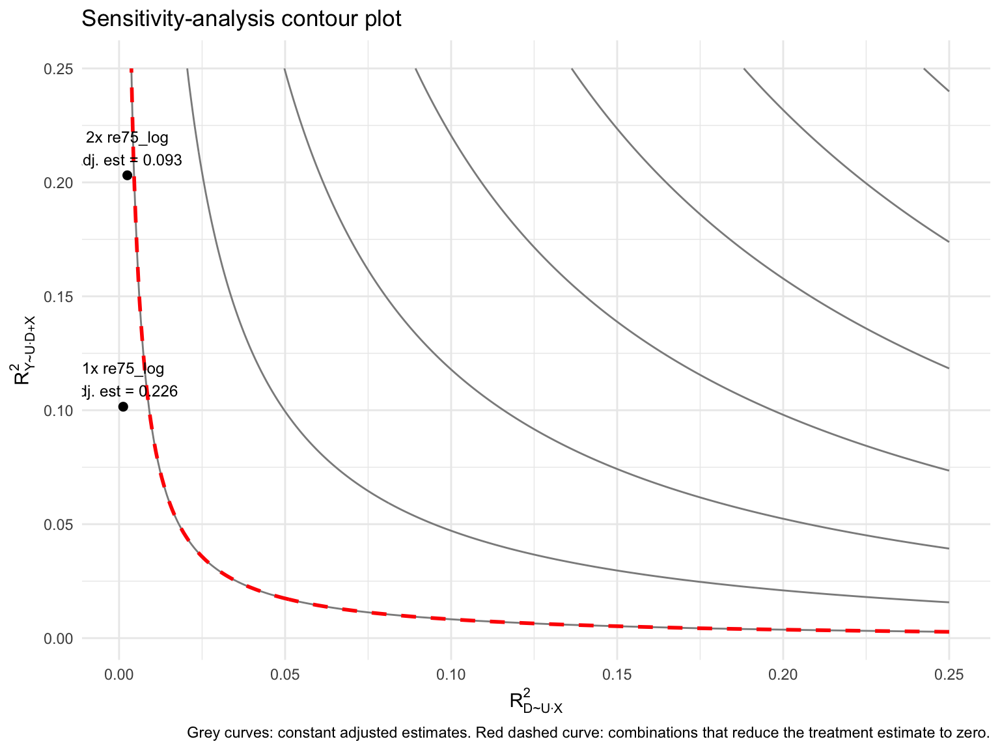
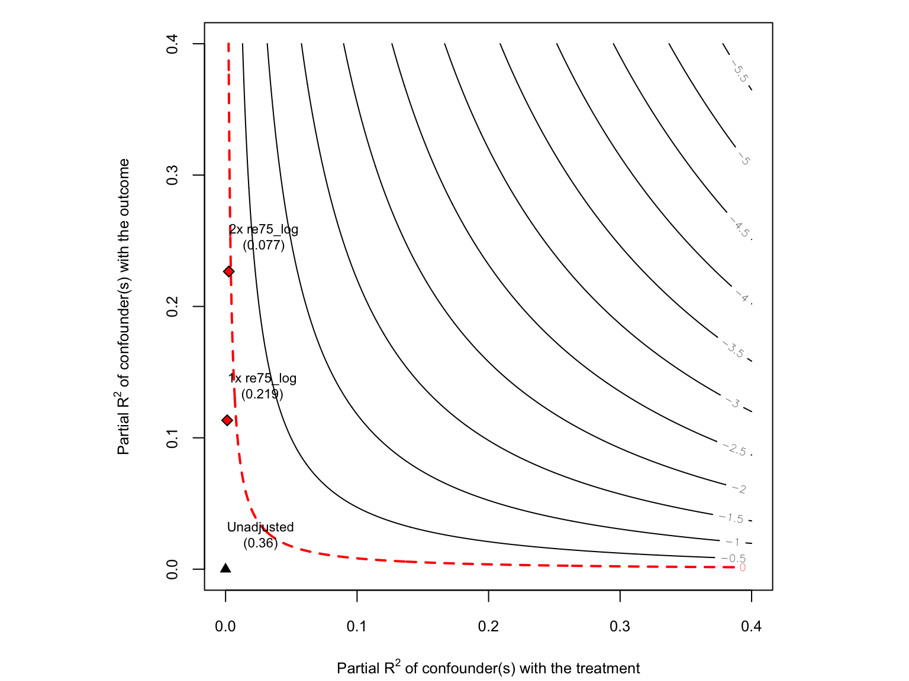
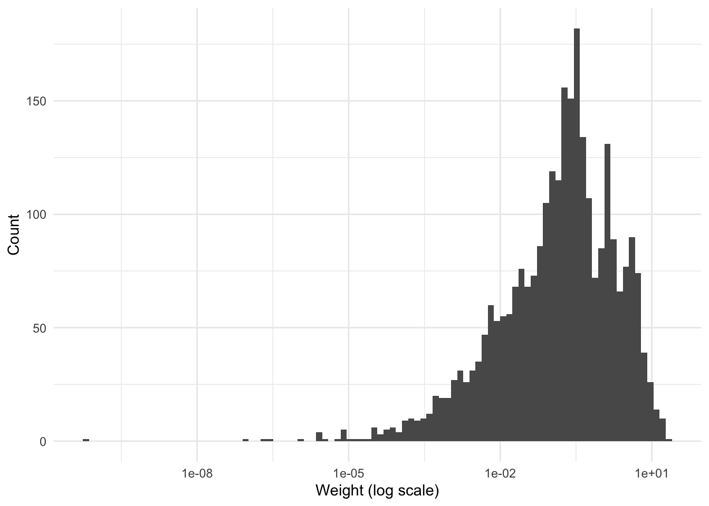
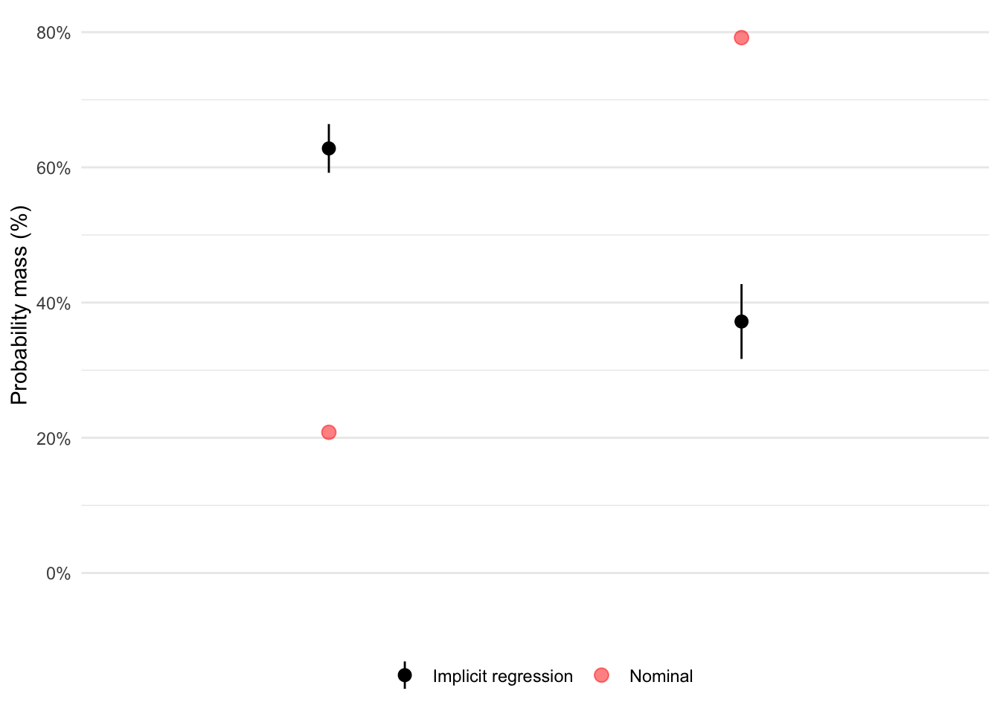
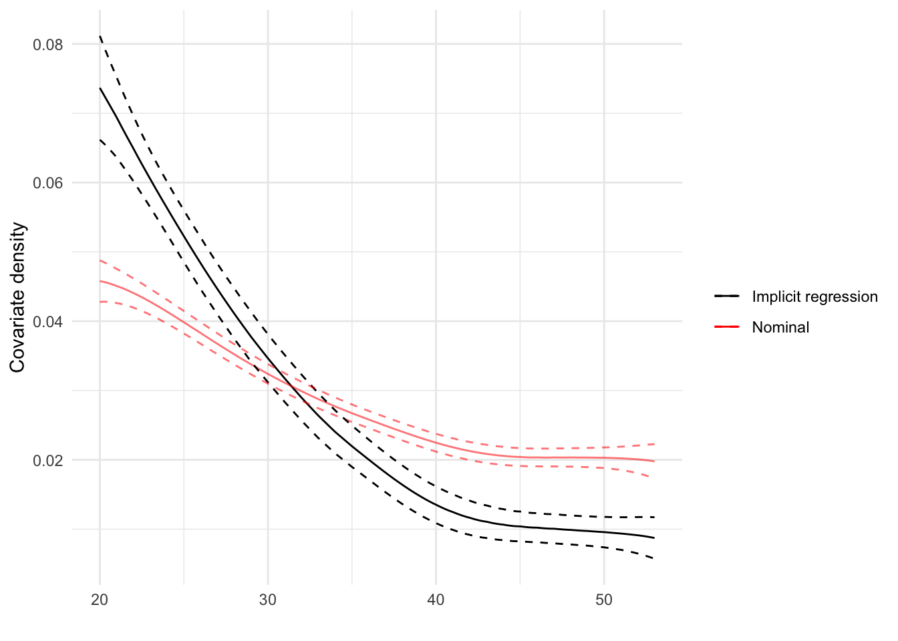

# install.packages("remotes")
remotes::install_github(
"ddimmery/regweight",
upgrade = "never",
dependencies = TRUE,
build_vignettes = FALSE
)
packages <- c("dplyr", "ggplot2", "broom", "knitr", "CBPS", "sensemakr", "regweight")
missing_pkgs <- packages[!vapply(packages, requireNamespace, logical(1), quietly = TRUE)]
if (length(missing_pkgs) > 0) {
stop(
"Please install these packages before knitting: ",
paste(missing_pkgs, collapse = ", ")
)
}
invisible(lapply(packages, library, character.only = TRUE))Lab 5
Overview
This lab follows a simple workflow:
- use a linear regression to describe the conditional expectation function,
- interpret selected coefficients as marginal effects,
- show how omitted-variable bias changes the coefficient of interest,
- use sensitivity analysis to ask how strong an unobserved confounder would need to be to change the conclusion,
- briefly illustrate how the
regweightpackage can be used to inspect the implicit regression weights behind a coefficient.
We use the LaLonde job-training data from the CBPS package throughout.
1. Data preparation
The outcome is earnings in 1978. The treatment is participation in the training program. We also include a standard set of pre-treatment controls.
data("LaLonde", package = "CBPS")
df <- LaLonde %>%
filter((exper == 1 & treat == 1) | (exper == 0 & treat == 0)) %>%
mutate(
log_re78 = log(re78 + 1),
re74_log = log(re74 + 1),
re75_log = log(re75 + 1),
treat = as.numeric(treat)
)
analysis_vars <- c(
"log_re78", "treat", "age", "educ", "black", "hisp",
"married", "nodegr", "re74_log", "re75_log", "re74.miss"
)
summary_df <- df %>%
dplyr::select(dplyr::all_of(analysis_vars)) %>%
summary()
summary_df log_re78 treat age educ
Min. : 0.000 Min. :0.0000 Min. :17.00 Min. : 0.00
1st Qu.: 9.063 1st Qu.:0.0000 1st Qu.:25.00 1st Qu.:10.00
Median : 9.863 Median :0.0000 Median :31.00 Median :12.00
Mean : 8.531 Mean :0.1066 Mean :33.76 Mean :11.93
3rd Qu.:10.244 3rd Qu.:0.0000 3rd Qu.:43.00 3rd Qu.:14.00
Max. :11.704 Max. :1.0000 Max. :55.00 Max. :17.00
black hisp married nodegr
Min. :0.0000 Min. :0.00000 Min. :0.0000 Min. :0.0000
1st Qu.:0.0000 1st Qu.:0.00000 1st Qu.:1.0000 1st Qu.:0.0000
Median :0.0000 Median :0.00000 Median :1.0000 Median :0.0000
Mean :0.3093 Mean :0.03911 Mean :0.7919 Mean :0.3506
3rd Qu.:1.0000 3rd Qu.:0.00000 3rd Qu.:1.0000 3rd Qu.:1.0000
Max. :1.0000 Max. :1.00000 Max. :1.0000 Max. :1.0000
re74_log re75_log re74.miss
Min. : 0.000 Min. : 0.000 Min. :0.00000
1st Qu.: 8.967 1st Qu.: 8.824 1st Qu.:0.00000
Median : 9.723 Median : 9.687 Median :0.00000
Mean : 8.463 Mean : 8.376 Mean :0.09939
3rd Qu.:10.146 3rd Qu.:10.131 3rd Qu.:0.00000
Max. :11.828 Max. :11.964 Max. :1.00000 2. Conditional expectation function and marginal effects
Here, treat is binary, so the coefficient on treat is interpreted as the conditional difference in expected log earnings between treated and untreated units, holding the observed covariates fixed.
main_formula <- log_re78 ~ treat + age + educ + black + hisp + married +
nodegr + re74_log + re75_log + re74.miss
m_full <- lm(main_formula, data = df)
broom::tidy(m_full) %>%
knitr::kable(digits = 3, caption = "Main regression")| term | estimate | std.error | statistic | p.value |
|---|---|---|---|---|
| (Intercept) | 3.302 | 0.484 | 6.828 | 0.000 |
| treat | 0.360 | 0.225 | 1.595 | 0.111 |
| age | -0.019 | 0.005 | -3.511 | 0.000 |
| educ | 0.051 | 0.027 | 1.920 | 0.055 |
| black | 0.022 | 0.130 | 0.167 | 0.867 |
| hisp | 0.399 | 0.273 | 1.461 | 0.144 |
| married | 0.358 | 0.153 | 2.333 | 0.020 |
| nodegr | -0.242 | 0.172 | -1.406 | 0.160 |
| re74_log | 0.172 | 0.025 | 6.782 | 0.000 |
| re75_log | 0.431 | 0.024 | 17.713 | 0.000 |
| re74.miss | -0.615 | 0.183 | -3.369 | 0.001 |
Interpreting marginal effects
For a binary treatment, the marginal effect is a conditional mean difference. For a continuous regressor in a linear model, the coefficient itself is the marginal effect.
treat_effect <- coef(m_full)["treat"]
age_effect <- coef(m_full)["age"]
marginal_effects <- tibble::tibble(
quantity = c("Effect of treatment (binary D)", "Marginal effect of age (continuous X)"),
estimate = c(treat_effect, age_effect)
)
marginal_effects %>%
knitr::kable(digits = 3, caption = "Two coefficient interpretations in the linear model")| quantity | estimate |
|---|---|
| Effect of treatment (binary D) | 0.360 |
| Marginal effect of age (continuous X) | -0.019 |
We can also show the treatment effect using predictions for the same covariate profile under treat = 0 and treat = 1. In this example, our profile is the average values of the covariates in the sample. The difference in predicted log earnings between treat = 1 and treat = 0 is the same as the coefficient on treat in the linear model, which is a special case of the linearity assumption. In a more flexible model, these two quantities would not be identical, but they would still be related to each other as marginal effects and predictions are in general.
profile <- df %>%
summarise(
age = mean(age, na.rm = TRUE),
educ = mean(educ, na.rm = TRUE),
black = mean(black, na.rm = TRUE),
hisp = mean(hisp, na.rm = TRUE),
married = mean(married, na.rm = TRUE),
nodegr = mean(nodegr, na.rm = TRUE),
re74_log = mean(re74_log, na.rm = TRUE),
re75_log = mean(re75_log, na.rm = TRUE),
re74.miss = mean(re74.miss, na.rm = TRUE)
)
pred_data <- bind_rows(
mutate(profile, treat = 0),
mutate(profile, treat = 1)
)
pred_data$pred_log_re78 <- predict(m_full, newdata = pred_data)
pred_data age educ black hisp married nodegr re74_log re75_log
1 33.76103 11.93183 0.3092931 0.03911015 0.7918909 0.3505562 8.462941 8.375552
2 33.76103 11.93183 0.3092931 0.03911015 0.7918909 0.3505562 8.462941 8.375552
re74.miss treat pred_log_re78
1 0.09939003 0 8.492197
2 0.09939003 1 8.851835pred_diff <- diff(pred_data$pred_log_re78)
pred_diff[1] 0.3596383. Omitted-variable bias
We now compare the treatment coefficient across models with different control sets.
m_naive: no controls.m_demo: demographics only.m_short: adds 1974 earnings, but still omits 1975 earnings.m_full: adds 1975 earnings as well.
m_naive <- lm(log_re78 ~ treat, data = df)
m_demo <- lm(
log_re78 ~ treat + age + educ + black + hisp + married + nodegr,
data = df
)
m_short <- lm(
log_re78 ~ treat + age + educ + black + hisp + married + nodegr +
re74_log + re74.miss,
data = df
)
model_compare <- bind_rows(
broom::tidy(m_naive) %>% filter(term == "treat") %>% mutate(model = "Naive"),
broom::tidy(m_demo) %>% filter(term == "treat") %>% mutate(model = "Demographics only"),
broom::tidy(m_short) %>% filter(term == "treat") %>% mutate(model = "Omit re75_log"),
broom::tidy(m_full) %>% filter(term == "treat") %>% mutate(model = "Full model")
) %>%
dplyr::select(model, estimate, std.error, statistic, p.value)
model_compare %>%
knitr::kable(digits = 3, caption = "How the treatment coefficient changes across specifications")| model | estimate | std.error | statistic | p.value |
|---|---|---|---|---|
| Naive | -2.160 | 0.202 | -10.711 | 0.000 |
| Demographics only | -1.729 | 0.253 | -6.842 | 0.000 |
| Omit re75_log | 0.219 | 0.238 | 0.921 | 0.357 |
| Full model | 0.360 | 0.225 | 1.595 | 0.111 |
Exact decomposition for one omitted variable
Now we use the omitted-variable bias identity with one omitted covariate: re75_log.
delta_tilde: effect ofre75_logon the outcome in the long regression.gamma_tilde: residual association betweenre75_logandtreat, conditional on the other controls.delta_tilde * gamma_tilde: implied bias from omittingre75_log.
controls_z <- c("age", "educ", "black", "hisp", "married", "nodegr", "re74_log", "re74.miss")
aux_formula <- as.formula(
paste("re75_log ~ treat +", paste(controls_z, collapse = " + "))
)
aux_model <- lm(aux_formula, data = df)
delta_tilde <- coef(m_full)["re75_log"]
gamma_tilde <- coef(aux_model)["treat"]
bias_from_formula <- delta_tilde * gamma_tilde
bias_from_models <- coef(m_short)["treat"] - coef(m_full)["treat"]
ovb_table <- tibble::tibble(
quantity = c(
"delta_tilde: effect of re75_log on log_re78",
"gamma_tilde: residual imbalance of re75_log with treat",
"delta_tilde * gamma_tilde",
"Difference between short and full treatment coefficients"
),
value = c(delta_tilde, gamma_tilde, bias_from_formula, bias_from_models)
)
ovb_table %>%
knitr::kable(digits = 4, caption = "OVB decomposition for omitting re75_log")| quantity | value |
|---|---|
| delta_tilde: effect of re75_log on log_re78 | 0.4305 |
| gamma_tilde: residual imbalance of re75_log with treat | -0.3267 |
| delta_tilde * gamma_tilde | -0.1407 |
| Difference between short and full treatment coefficients | -0.1407 |
The last two rows should be almost identical up to numerical precision. That is the linear omitted-variable-bias decomposition at work.
4. Partial (R^2) and sensitivity analysis
Sensitivity analysis asks how strong an unobserved confounder would need to be to change the treatment estimate. The two key quantities are:
- outcome-side partial (R^2): how much of the residual outcome variation a confounder explains,
- treatment-side partial (R^2): how much of the residual treatment variation it explains.
We first compute the partial (R^2) of an observed benchmark variable, re75_log, and then use those values to calibrate hypothetical confounders.
A helper for partial (R^2)
partial_r2 <- function(reduced_model, full_model) {
r2_reduced <- summary(reduced_model)$r.squared
r2_full <- summary(full_model)$r.squared
(r2_full - r2_reduced) / (1 - r2_reduced)
}Benchmark partial (R^2) for re75_log
# Outcome-side partial R^2 for re75_log
m_y_reduced <- lm(
log_re78 ~ treat + age + educ + black + hisp + married + nodegr +
re74_log + re74.miss,
data = df
)
m_y_full <- lm(
log_re78 ~ treat + age + educ + black + hisp + married + nodegr +
re74_log + re74.miss + re75_log,
data = df
)
r2_y_benchmark <- partial_r2(m_y_reduced, m_y_full)
# Treatment-side partial R^2 for re75_log
m_d_reduced <- lm(
treat ~ age + educ + black + hisp + married + nodegr + re74_log + re74.miss,
data = df
)
m_d_full <- lm(
treat ~ age + educ + black + hisp + married + nodegr + re74_log + re74.miss + re75_log,
data = df
)
r2_d_benchmark <- partial_r2(m_d_reduced, m_d_full)
benchmark_table <- tibble::tibble(
benchmark = "re75_log",
outcome_side_partial_r2 = r2_y_benchmark,
treatment_side_partial_r2 = r2_d_benchmark
)
benchmark_table %>%
knitr::kable(digits = 4, caption = "Benchmark partial R-squared values")| benchmark | outcome_side_partial_r2 | treatment_side_partial_r2 |
|---|---|---|
| re75_log | 0.1016 | 0.0012 |
Manual contour plot
The graph below is built from a grid of hypothetical confounders. Each point in the graph is a pair of partial (R^2) values for the treatment and outcome regressions, respectively. For each pair we compute the implied bias using the formula from Cinelli and Hazlett (2020). The red dashed contour is the set of confounder strengths that would reduce the treatment estimate to zero.
estimate_treat <- coef(m_full)["treat"]
se_treat <- summary(m_full)$coefficients["treat", "Std. Error"]
df_treat <- df.residual(m_full)
sens_grid <- expand.grid(
r2_treatment = seq(0.001, 0.25, length.out = 150),
r2_outcome = seq(0.001, 0.25, length.out = 150)
) %>%
mutate(
implied_bias = se_treat * sqrt((r2_outcome * r2_treatment / (1 - r2_treatment)) * df_treat),
adjusted_estimate = estimate_treat - implied_bias
)
# Simple didactic benchmark scaling for plotting.
# This is useful for teaching the logic of the graph.
benchmark_points <- tibble::tibble(
label = c("1x re75_log", "2x re75_log"),
r2_treatment = pmin(c(1, 2) * r2_d_benchmark, 0.99),
r2_outcome = pmin(c(1, 2) * r2_y_benchmark, 0.99)
) %>%
mutate(
implied_bias = se_treat * sqrt((r2_outcome * r2_treatment / (1 - r2_treatment)) * df_treat),
adjusted_estimate = estimate_treat - implied_bias
)
benchmark_points %>%
knitr::kable(digits = 4, caption = "Benchmark-calibrated hypothetical confounders")| label | r2_treatment | r2_outcome | implied_bias | adjusted_estimate |
|---|---|---|---|---|
| 1x re75_log | 0.0012 | 0.1016 | 0.1334 | 0.2262 |
| 2x re75_log | 0.0025 | 0.2031 | 0.2670 | 0.0927 |
ggplot(sens_grid, aes(x = r2_treatment, y = r2_outcome, z = adjusted_estimate)) +
geom_contour(color = "grey55", breaks = pretty(sens_grid$adjusted_estimate, n = 6)) +
geom_contour(color = "red", linetype = "dashed", linewidth = 1, breaks = 0) +
geom_point(
data = benchmark_points,
aes(x = r2_treatment, y = r2_outcome),
inherit.aes = FALSE,
size = 2
) +
geom_text(
data = benchmark_points,
aes(x = r2_treatment, y = r2_outcome, label = paste0(label, "\nAdj. est = ", round(adjusted_estimate, 3))),
inherit.aes = FALSE,
nudge_y = 0.012,
size = 3.2
) +
labs(
title = "Sensitivity-analysis contour plot",
x = expression(R[D %~% U %.% X]^2),
y = expression(R[Y %~% U %.% D + X]^2),
caption = "Grey curves: constant adjusted estimates. Red dashed curve: combinations that reduce the treatment estimate to zero."
) +
theme_minimal()
sensemakr implementation
The manual contour plot above is useful for understanding the logic. The sensemakr package automates a formal version of this exercise.
sens <- sensemakr::sensemakr(
model = m_full,
treatment = "treat",
benchmark_covariates = "re75_log",
kd = c(1, 2)
)
sensSensitivity Analysis to Unobserved Confounding
Model Formula: log_re78 ~ treat + age + educ + black + hisp + married + nodegr +
re74_log + re75_log + re74.miss
Null hypothesis: q = 1 and reduce = TRUE
Unadjusted Estimates of ' treat ':
Coef. estimate: 0.35964
Standard Error: 0.22549
t-value: 1.59492
Sensitivity Statistics:
Partial R2 of treatment with outcome: 0.00092
Robustness Value, q = 1 : 0.02982
Robustness Value, q = 1 alpha = 0.05 : 0
For more information, check summary.plot(sens)
5. Brief introduction to regweight
The regweight package is useful when you want to know which observations matter most for a particular regression coefficient. Instead of focusing on global leverage, it focuses on the implicit weights behind one selected term.
Below we ask for the implicit regression weights behind the coefficient on treat in the full model.
rw_treat <- regweight::calculate_weights(m_full, "treat")
hist(rw_treat)
The histogram above shows the distribution of the implicit regression weights for the treat coefficient. Some observations have more influence on the treat coefficient than others, and this is not necessarily related to leverage in the usual sense.
We can also inspect how those implicit weights vary over a discrete covariate.
plot(rw_treat, df$married)
The implicit sample for the treat coefficient gives more weight to some observations than others, and this can be related to covariate values. The nominal sample is the original data, and the implicit sample is the data weighted by the regression weights for the treat coefficient. In our example, the implicit sample for the treat coefficient gives more weight to unmarried units than married units. This means that the treat coefficient is learning more from unmarried units than married units.
And we can compare the nominal and implicit samples for a few covariates.
summary(
rw_treat,
dplyr::select(df, age, married, nodegr, re74_log)
)# A tibble: 12 × 5
covariate value sample mean std_dev
<chr> <chr> <chr> <dbl> <dbl>
1 married 0 Nominal 0.208 NA
2 married 0 Implicit 0.628 NA
3 married 1 Nominal 0.792 NA
4 married 1 Implicit 0.372 NA
5 nodegr 0 Nominal 0.649 NA
6 nodegr 0 Implicit 0.428 NA
7 nodegr 1 Nominal 0.351 NA
8 nodegr 1 Implicit 0.572 NA
9 age <NA> Nominal 33.8 10.6
10 age <NA> Implicit 28.5 9.59
11 re74_log <NA> Nominal 8.46 3.28
12 re74_log <NA> Implicit 6.58 3.98plot(rw_treat, df$age)
For the age variable, the implicit sample is younger than the nominal sample, which means that the treat coefficient is learning more from younger units than older units. From the plot of age, we can see that the implicit sample has more weight on younger units than older units, which is consistent with the summary statistics.
Interpretation
A useful reading strategy is:
- without using weights, we can only talk about the regression coefficient as a global quantity that describes the entire sample,
- with regression weights, we can talk about the regression coefficient as a local quantity that describes a particular implicit sample,
- if the weight distribution is very dispersed, the regression coefficient is learning from a wide range of observations,
- if the weight distribution is very concentrated, a relatively small set of observations is driving the coefficient,
- if the implicit sample looks very different from the nominal sample, the regression coefficient may be learning mostly from a specific part of the data,
- this is especially useful when you worry that the OLS estimand may be giving more influence to some units than others.